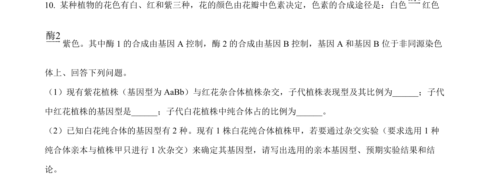
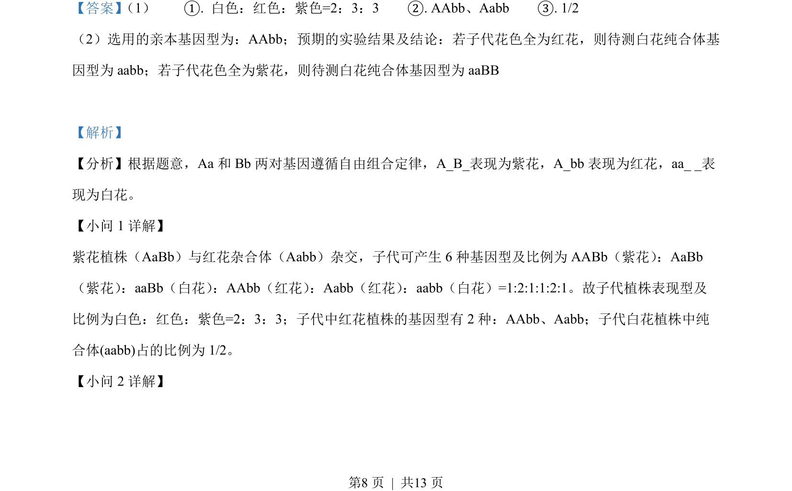
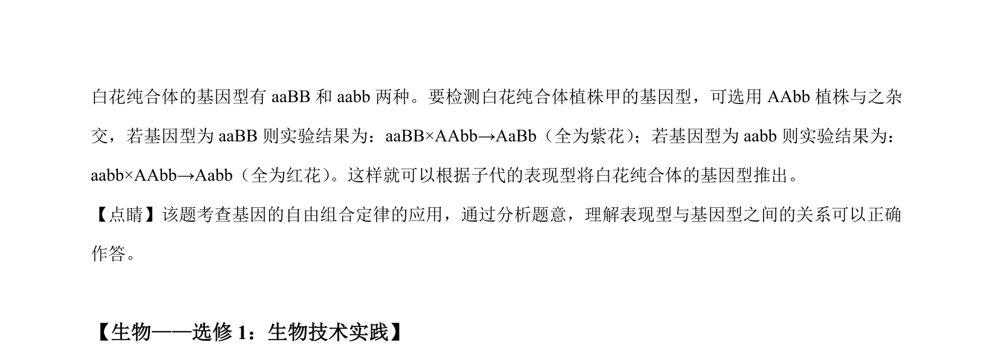

考点：自由组合定律 基因互作 遗传杂交实验设计 概率计算
自由组合定律
基因互作
遗传杂交实验设计
概率计算

本题通过花色遗传的基因互作，考查自由组合定律的应用及杂交实验设计，要求推断子代表现型比例、基因型及纯合体鉴定。


📄 原 PDF 第 8 页：素材/真题/吉林/2008-2024·（吉林）生物高考真题/2022年高考生物试卷（全国乙卷）（解析卷）.pdf
素材/真题/吉林/2008-2024·（吉林）生物高考真题/2022年高考生物试卷（全国乙卷）（解析卷）.pdf